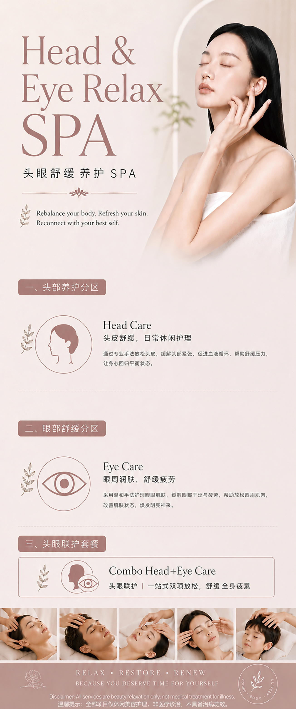

Treatments
Head & Eye Spa
A deeply restorative spa experience combining professional head care and eye relaxation therapy. Rebalance your body, refresh your senses, and reconnect with your best self.
About the Treatment
Relief for Your Head, Rest for Your Eyes
Modern lifestyles place enormous strain on both the head and the eyes. Hours of screen time, mental stress, poor posture and restless sleep all accumulate as chronic tension in the scalp, neck, and eye area � leaving you feeling drained, foggy, and unrefreshed even after rest.
Our Head & Eye Spa is designed to address this from the root. Using a combination of warm oil scalp massage, acupressure, and targeted eye therapy, the treatment relieves built-up tension, improves circulation to the scalp and face, and calms the nervous system � producing a profound sense of relaxation that lasts well beyond the session itself.
Regular sessions help regulate sleep quality, reduce stress-related headaches, ease eye fatigue and dryness, and restore the natural vitality of the scalp and hair. It is a complete head-to-eye wellness ritual for those who carry the weight of the day in their minds.
- Chronic scalp tension and headaches
- Eye strain and dryness from screen exposure
- Difficulty unwinding or poor sleep quality
- Dull, flat hair or dry scalp conditions
- Neck and shoulder tension linked to the head
- Mental fatigue and difficulty focusing

Treatment Benefits
What You Can Expect
A full-body reset that begins at the top � releasing tension, restoring clarity, and renewing your energy.
Scalp Tension Relief
Targeted massage and acupressure dissolve tightness held in the scalp, temples, and base of the skull. Many clients notice a visible softening of facial expression and jaw tension after just one session.
Eye Fatigue Recovery
Warm compresses and gentle acupressure around the orbital area restore circulation, ease dryness, and relieve the heavy, strained feeling that builds from extended screen time or poor sleep.
Improved Scalp Health
Stimulated blood flow to the scalp nourishes hair follicles, balances oil production, and creates the conditions for healthier, more resilient hair over consistent sessions.
Deep Mental Calm
The parasympathetic nervous system response triggered by skilled head massage produces a meditative state of calm � reducing cortisol, slowing the heart rate, and quieting a busy, overloaded mind.
Better Sleep Quality
Clients who schedule regular Head & Eye Spa sessions frequently report falling asleep more easily and waking up more refreshed � the result of reduced nervous system tension carried into the evening.
Immediate Visible Relaxation
The relaxation response is visible from the first session. Skin appears calmer, the brow unfurrows, and the face takes on a rested, refreshed quality that others around you will notice.
The Process
How It Works
A step-by-step ritual designed to release, restore, and rebalance � from scalp to eye.
-
01
Consultation & Assessment
Your therapist begins with a brief consultation to understand your current tension patterns, sleep quality, screen habits, and any specific concerns � scalp dryness, eye strain, headaches, or stress. This allows us to personalise the pressure, technique, and products used throughout the session.
-
02
Warm Oil Scalp Preparation
A warm, nourishing oil suited to your scalp condition is applied and worked gently into the scalp and hair roots. The warmth softens the tissue, begins to loosen tension held in the scalp fascia, and prepares the area for deeper therapeutic work. Aromatic oils further engage the senses and signal the nervous system to begin unwinding.
-
03
Head Massage & Acupressure
A structured head massage works systematically across the scalp, temples, forehead, base of skull, and upper neck. Acupressure points associated with tension relief, circulation, and nervous system calming are engaged throughout. The pressure is adjusted to your comfort level and specific areas of tension.
-
04
Eye Relaxation Therapy
Warm eye compresses are applied to the eye area, followed by a gentle orbital acupressure sequence that targets the key points around the eyes responsible for relieving strain, puffiness, and fatigue. A cooling or calming eye serum is then applied to complete the eye treatment and leave the area feeling refreshed and brightened.
Your Questions Answered
Frequently Asked Questions
-
For general wellness and stress maintenance, once every two to three weeks is ideal. If you are experiencing acute tension, frequent headaches, or significant eye strain, weekly sessions in the first month will produce faster and more lasting relief. Your therapist will recommend a schedule that suits your lifestyle and goals.
-
Yes. We select oils and products based on your scalp type and sensitivity. Pressure is always tailored to your comfort. Clients with conditions such as scalp psoriasis or eczema should inform their therapist beforehand so the approach can be adjusted accordingly.
-
Many clients find significant relief from tension-type headaches through regular Head Spa sessions. The massage and acupressure work addresses the muscular and fascial tension that frequently underlies tension headaches. However, if your headaches are frequent or severe, we recommend discussing them with a medical professional alongside your spa treatments.
-
A standard Head & Eye Spa session is 60 minutes. Extended 90-minute sessions are available for those who wish to add neck and shoulder work or a full facial relaxation sequence. Sessions are by appointment only � please book in advance to secure your preferred time.
Ready to Release What You've Been Carrying?
Book your Head & Eye Spa session today. Walk in tense, walk out renewed � by appointment only.